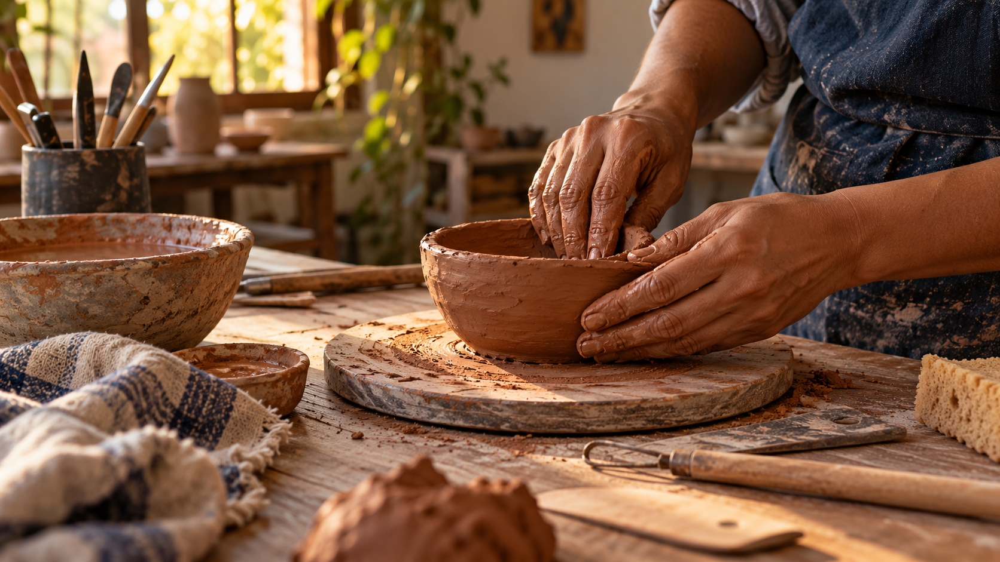

Modelar
Na oficina, você trabalha a argila e cria a forma da sua peça com as próprias mãos.
CONCEITO DIGITAL / 3 DIREÇÕES PARA EXPLORAR
OFICINA DE MODELAGEM MANUAL · BIGUAÇU, SC
Na oficina, você modela sua própria peça. Depois, ela seca, passa pela queima, é embalada e enviada para você.
Uma experiência para aprender fazendo, no seu tempo.

A EXPERIÊNCIA 01 / 03
Você participa de uma oficina de modelagem manual e dá forma à sua própria peça. Não é uma peça pronta para escolher: é algo que você cria e acompanha.
As peças que aparecem no perfil são trabalhos de alunos. Cada pessoa recebe a peça que modelou depois das etapas do ateliê.
DO PRIMEIRO GESTO À PEÇA PRONTA
Um caminho feito com cuidado, que continua mesmo depois do encontro no ateliê.
Na oficina, você trabalha a argila e cria a forma da sua peça com as próprias mãos.
A peça fica no ateliê para secar e passar pelo processo de queima.
Depois de pronta, ela é embalada e enviada para quem a modelou.
Cada peça é feita por um aluno durante a oficina e não está à venda.
MÃO NA MATÉRIA
“A forma aparece no encontro entre a argila e as suas mãos.”
Imagem criada como referência visual para este conceito. O projeto final pode usar fotos reais do ateliê, com autorização.
ANTES DE PARTICIPAR
Consulte diretamente com o ateliê as próximas datas, orientações e detalhes da oficina. A conversa continua pelo canal que vocês já usam no dia a dia.
Conversar pelo WhatsAppDÚVIDAS RÁPIDAS
Se a sua dúvida for outra, pode perguntar direto pelo WhatsApp.
Falar com o ateliêNão. São peças feitas por alunos durante as oficinas e pertencem a quem as modelou.
Ela fica secando no ateliê, passa pela queima, é embalada e enviada para o aluno que a produziu.
Chame o ateliê pelo WhatsApp para consultar datas e receber as orientações atualizadas.